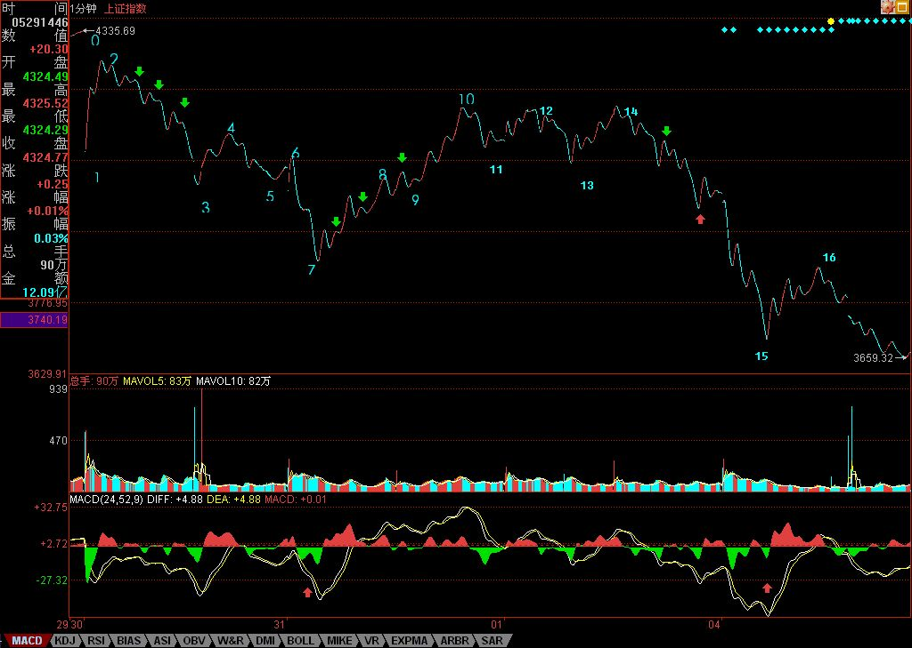
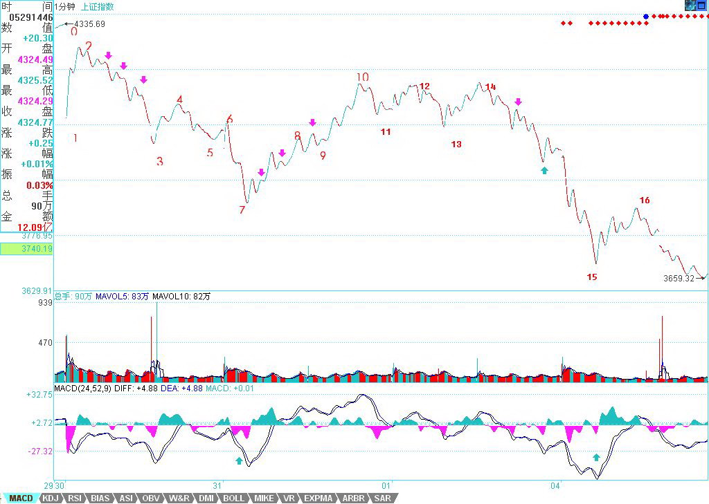

0545 - 教你炒股票58：图解分析示范三¶
日期：(2007-06-04 22:34:47) 分类：[时政经济（缠中说禅经济学）]
明天收盘后要出一次差，去一趟曾419赋诗的地方，所以，先把课程送上，今后几天都没时间写帖子，但每天收盘后的解盘，都会尽量按时附上。至于其他内容的帖子，等出差回来再说了。
大盘大跌，除了清洗筹码，还可以清洗一下人。本ID说过，这里没必要有这么多人，来这里的，如果不是希望成为猎鲸者的，就没必要来了。那种跌个40%就惊慌失措的，也不大适合市场。市场从来都是血腥场所，这点在前面已经反复说到，见不了血腥场面的，还是把钱好好去买国债，这样比较安心。股票就是废纸，该卖的时候不卖，把股票当宝，这就是投资的最大软肋。如果你看图形操作时，做不到无我无股票，只有走势图形，那基本可以不看图了，因为有我有股票，被自己的贪婪恐惧所牵引，你看的图，也不过就是自己的贪婪与恐惧，那何必看图？
说一个最简单的例子，就算你没技术，只按最简单的跌破5日线走，那请看看你该在什么时候走，且不说对于具体的个股了。这次是一个很好的实习机会，请回想一下那些卖点时，你自己究竟在干什么？心里是不是有很多幻想，被幻想蒙蔽了眼睛？看图操作，唯一的对象只有图，谁说都没用，市场是当下发生着的，没有人能替你去反应。
先把市场放一边，继续图解分析，把这次跌势的图形连续分析下去，这样大概对各位的理解与分析有一定的帮助。请看下图：


各位可能还会对如何去确定线段有很大疑惑，图上已经用数字标记了从30日开始的1分钟图上的线段。为什么这样标记？例如14-15间带红绿箭头这一段为什么不是线段？这很简单，因为这段中的下-上-下-上-下中，没有任何的重合，也就是第二个上的终点没有触及第一个上的起点，这种图形，和直接的一个下没有任何区别。而一个线段，除非是缺口，否则必须由至少上-下-上或下-上-下的三折组成，只要互相相邻的上或下不重合，则这个模式可以一直延伸下去而依然还是一个线段。这里就不难明白14-15为什么只是一段线段了。
那么为什么14-15这线段不构成合适的买点，因为在下面的MACD辅助中，可以看出这一段的力度比前面所有的都大（这从黄白线就一目了然了），那当然不构成任何的1分钟以上的背驰，最多就是1分钟以下最小级别的背驰。在15下MACD小红箭头处，比较绿柱子的面积，就可以发现这个小的背驰，因此就有了15-16的反弹，该反弹在14-15最后一个上附近受阻，十分技术。
而站在10-13构成的1分钟中枢来看，15-16这反弹反而是构成一个第三类卖点，本ID看了一下留言，有叫CCTV也看出这个是一个第三类卖点，但他的理由好象是这反弹没突破7这点所以是第三类卖点，这是不对的，因为如果是那一点，那对应的中枢就乱了。注意，第三类买卖点必须是次级别离开，次级别反抽，而且是针对该级别中最近那个中枢，而以前也曾说过，对于一些快速变动的行情，往往第三类买卖点离开的距离会很远。
从16开始的一段，有进入背驰段的可能，但由于明天的行情没有开始，所以如果明天突然加速下跌，就可以破坏这可能，所以具体是否背驰成立，还要看明天走势的内部区间套的当下定位。如果出现背驰，那么一个反弹至少重新回到15这点上，这样就从15这点开始至少形成一个1分钟的中枢了。
而对于1-10这个5分钟中枢，该反弹如果不能重新回到4015之上，那就会形成一个5分钟的第三类卖点。从目前的情况看，这种可能性有很大，所以这也预示着，今后几天，任何在4000点下的反弹，都会构成一个卖点并至少引发一个更大级别的中枢，甚至是新一轮的下跌，除非这反弹能重回4000点之上。显然，从中枢的分析中，可以很绝对地分析出今后一段走势的一些操作性质。
站在更大的层面上，大盘要重新站稳，就要形成一个较大级别的中枢，而从10开始，一个新的5分钟中枢都没形成，如果新的5分钟中枢最终和1-10这个5分钟中枢没有重合，那么就形成一个5分钟级别的下跌，那其后的压力就更大了，所以，那CCTV也蒙对了一点，就是7这点有这极强的技术含义，如果一个5分钟背驰引发的反弹都能重回该点之上，那么大盘的走势就会有好转的可能，否则短线压力依然。
别看本ID理论的分析似乎很复杂，但其中绝对条理清晰，每个结论都是严格，没有任何含糊的。但关键，首先要把图给分解对，否则就乱套了。这点必须多看图，多实践。所以，今后一段课程，都继续把这图分解下去，至少看到一个日线中枢的生成为止，有这样的具体分析，对各位的理解和把握应该有所帮助。
附录：
本ID要马上开车去419的地方，不能多说。今天，如果你还看不明白昨天说的背驰段，然后今天如何精确定位的，那就好好学习吧。上图的19段结束位置是3404点（为什么，如何当下去判断，好好研究好，这是真工夫），后面的走势，上面已经提及，下午走的是第20段，该段结束后，就进入上面说的中枢震荡中。明天的任务，就是看好这第20段的结束。
大走势，就是月线的5均线，今天盘中假突破，而且还是3434点一般的位置，这不难看出来。
对不起，不能多说了，本ID该干的干了，该说的说了，是否能成为你自己的东西，那就不是本ID能决定的。
明天解盘见，帖子就写不了了。
本文评论获取自靠谱的方式，包含疑似禅师的回复数量：[17]
UID:[1215172700] 昵称：缠中说禅 日期：(2007-06-04 22:38:00)
明天收盘就要开车走，所以解盘附录上后就不能和各位多聊了。今后几天，尽量收盘后写解盘，如果有时候要晚上写，也请原谅。先下，再见。
UID:[1215172700] 昵称：缠中说禅 日期：(2007-06-04 22:45:33)
补充一句，图片看不到的，请到本ID相册里找20070604那张放大看。子时，要休息，下了，再见。
UID:[0] 昵称：[匿名] TT 日期：(2007-06-04 23:08:03)
楼主去甲骨文出差，是不是处理整体上市事宜？
UID:[0] 昵称：[匿名] TT 日期：(2007-06-04 23:12:56)
[匿名] 新浪网友 2007-06-04 23:01:33
晕了吧，找什么借口出差垃圾
-
楼主出差就不能看盘，做盘？我估计甲骨文的事有进展。
UID:[0] 昵称：[匿名] TT 日期：(2007-06-04 23:31:55)
[匿名] 新浪网友 2007-06-04 23:14:25
[匿名] 大盘 2007-06-04 22:23:33
[匿名] 新浪网友 2007-06-04 22:13:51
她那个理论仅适用于牛市，人气旺，傻人多的市场。现在熊了就不灵了
-----
本人在操作上虽然还很差，但那主要是心态问题，从股票走势来讲，还没有也不可能有不符合中枢理论的，如果谁硬要说不灵光，不妨举个反例说明
-------------
看一下今天的601600，09:59也就是20.66元这个位置，创出新低，而MACD上后一个明显小于前一个，而中枢也是非常的明显，明显是一个背驰（尽管是一个小级别的背驰），按妹妹的理论，这里必定而且肯定逆转，但很可惜的是，图形并没有因此而上扬，而是跟着大盘再次的下探。其实今天有很多的股都是这样的走势。
、、
你这水平，比我还差，还敢说楼主不是。连我都知道，背驰要看黄白线拉回0轴，你看那时候黄白线在哪里？
UID:[0] 昵称：[匿名] 3G 日期：(2007-06-04 23:56:50)
[匿名] 新浪网友 2007-06-04 23:47:13
我晕啊,老大,你能不能讲解5分\30分图啊…………
=
你好象没理解楼主的理论，5分钟是1分钟结合起来的，不一定从5分钟开始看。
UID:[0] 昵称：[匿名] TT 日期：(2007-06-05 00:15:35)
[匿名] 新浪网友 2007-06-05 00:04:30
[匿名] TT 2007-06-04 23:31:55
[匿名] 新浪网友 2007-06-04 23:14:25
[匿名] 大盘 2007-06-04 22:23:33
[匿名] 新浪网友 2007-06-04 22:13:51
她那个理论仅适用于牛市，人气旺，傻人多的市场。现在熊了就不灵了
-----
本人在操作上虽然还很差，但那主要是心态问题，从股票走势来讲，还没有也不可能有不符合中枢理论的，如果谁硬要说不灵光，不妨举个反例说明
-------------
看一下今天的601600，09:59也就是20.66元这个位置，创出新低，而MACD上后一个明显小于前一个，而中枢也是非常的明显，明显是一个背驰（尽管是一个小级别的背驰），按妹妹的理论，这里必定而且肯定逆转，但很可惜的是，图形并没有因此而上扬，而是跟着大盘再次的下探。其实今天有很多的股都是这样的走势。
、、你这水平，比我还差，还敢说楼主不是。连我都知道，背驰要看黄白线拉回0轴，你看那时候黄白线在哪里？
-----
楼主以前说过,1分钟图可以不看黄白线。
、、
不是吧，楼主什么时候说1分钟图可以不看黄白线的？难道1分钟背驰都可以不看黄白线吗？楼主是说，如果是1分钟以下级别的背驰，可以用绿柱子面积判断力度，前提是你要选择好比较的两段。你说那位置，比较的是9点45开始很小的两段，而且还是一个盘整背驰，所以后面有一个很小的反弹，完全符合楼主理论的要求。
UID:[0] 昵称：[匿名] 路过 日期：(2007-06-05 02:25:54)
路过
UID:[0] 昵称：[匿名] GG 日期：(2007-06-05 08:36:46)
签到!再细读!
UID:[0] 昵称：[匿名] CCTV 日期：(2007-06-05 09:57:28)
给妹子这样说，我都不好意思发言啦！！！潜心学习半个月！！！！
UID:[0] 昵称：[匿名] CCTV 日期：(2007-06-05 12:06:34)
[匿名] 新民工 2007-06-05 11:20:19
我觉得缠主就是个时候诸葛亮，谁不知道买点买，卖点卖，纯粹一忽悠，希望来这里的人清醒一下，如果她真的那么厉害，她有时间和闲工夫来这里吗？简直就一女变态，害的我血本无归！
-
你有病，妹子30日一大早发帖子让你卖，你卖了吗？？？？28日让你把本拿出来，你拿了吗？？？？？
UID:[0] 昵称：[匿名] CCTV 日期：(2007-06-05 12:09:53)
[匿名] 深圳在南 2007-06-05 11:52:11
[匿名] 新浪网友 2007-06-05 11:47:43
流浪的轨迹 2007-06-05 11:40:23
大家能一起讨论下么?跌停抢反弹 如何使用缠理论,这个是理论目前最大的实用价值吧.
======
跌停抢反弹也要看什么势，什么股，前几天趋势猛烈向下，你去抢跌停，那是蛮干，顺势而为第一。
==
同意。呵。。。看CCTV，大盘都不来了。不也是一个好的证明？主力怎么干。我们就怎么干吧。
--
谁说我不来呀？？？？我只是被妹子这样一说，不好意思发言啦！！！！我认为下午开盘不跌，就有一波比较大的反弹！！！！刚才的3404应该是妹子图上的第17段结束！！！！！下午反弹如果到不了今天开盘的位置，就还要杀一波！！！！！
UID:[0] 昵称：[匿名] CCTV 日期：(2007-06-05 15:12:56)
牛呀！！！看到大爷中午说的话了吗？？？？？？
UID:[0] 昵称：[匿名] 牛 日期：(2007-06-05 15:19:03)
[匿名] CCTV 2007-06-05 15:12:56
牛呀！！！看到大爷中午说的话了吗？？？？？？
====
还是老师理论牛!!!蹦都蹦不出老师图!!!
UID:[1215172700] 昵称：缠中说禅 日期：(2007-06-05 15:23:01)
本ID要马上开车去419的地方，不能多说。今天，如果你还看不明白昨天说的背驰段，然后今天如何精确定位的，那就好好学习吧。上图的17段结束位置是3404点（为什么，如何当下去判断，好好研究好，这是真工夫），后面的走势，上面已经提及，下午走的是第18段，该段结束后，就进入上面说的中枢震荡中。明天的任务，就是看好这第18段的结束。
大走势，就是月线的5均线，今天盘中假突破，而且还是3434点一般的位置，这不难看出来。 对不起，不能多说了，本ID该干的干了，该说的说了，是否能成为你自己的东西，那就不是本ID能决定的。 明天解盘见，帖子就写不了了。
UID:[0] 昵称：[匿名] CCTV 日期：(2007-06-06 13:09:59)
大盘现在碰到大压力啦!!!能不能突破呀????
UID:[0] 昵称：[匿名] CCTV 日期：(2007-06-06 15:08:47)
哈哈,今天又提示大盘最高点!!!看看我13点几分的留言!!!